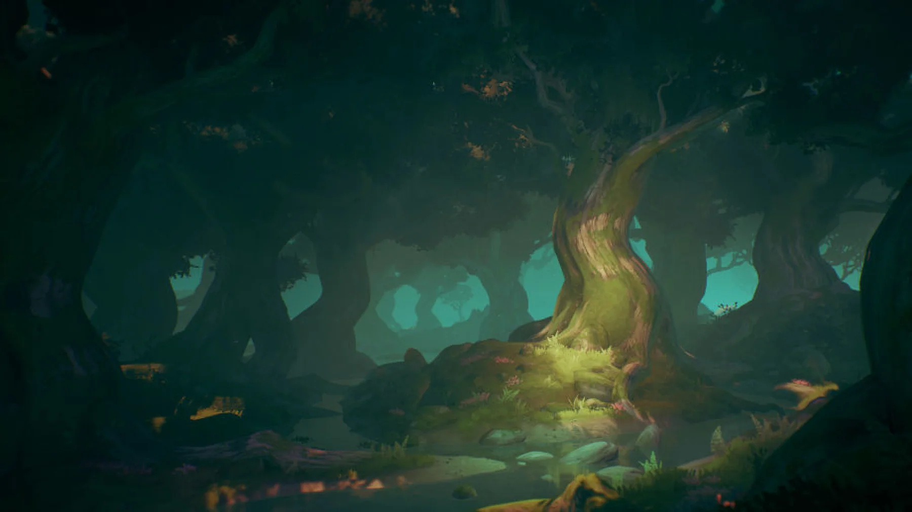
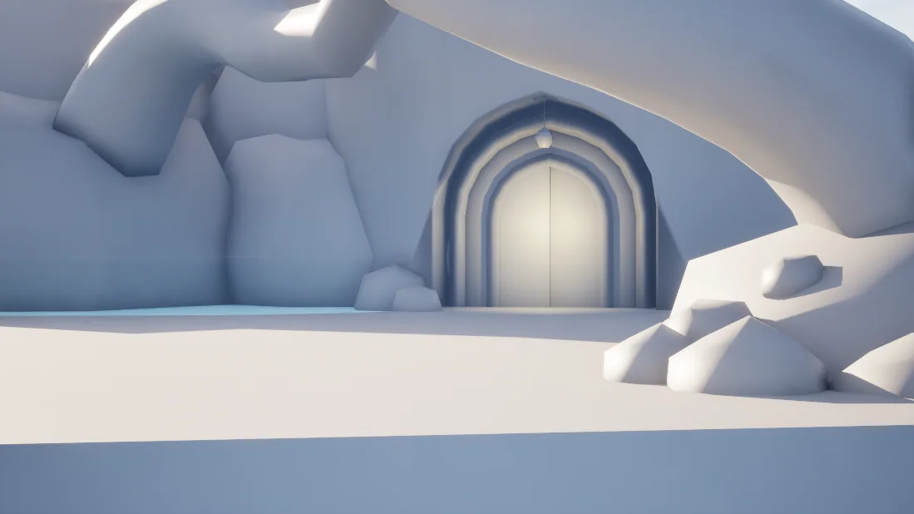
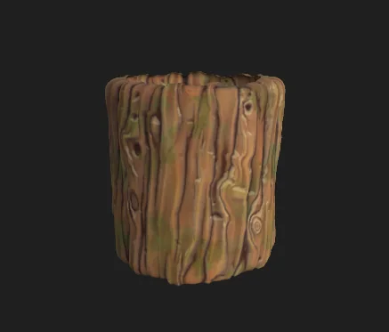
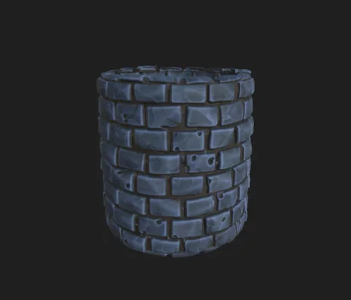
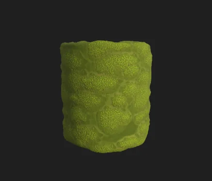
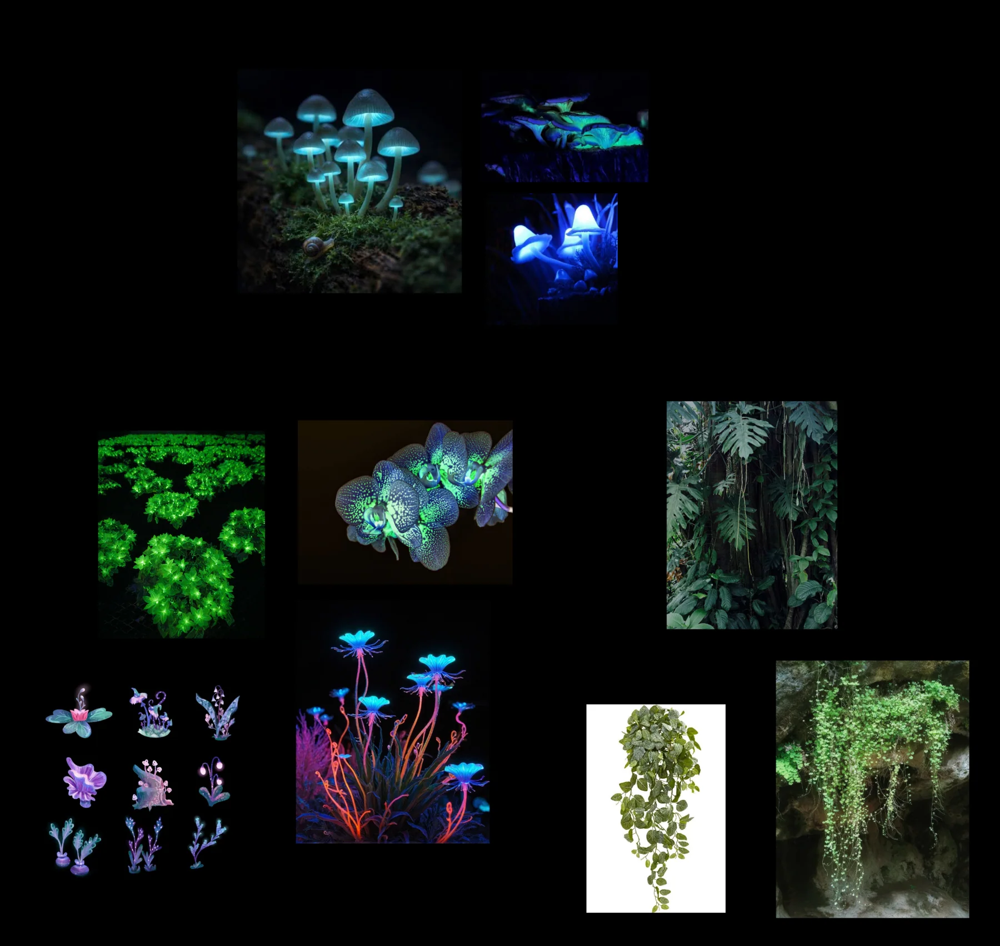
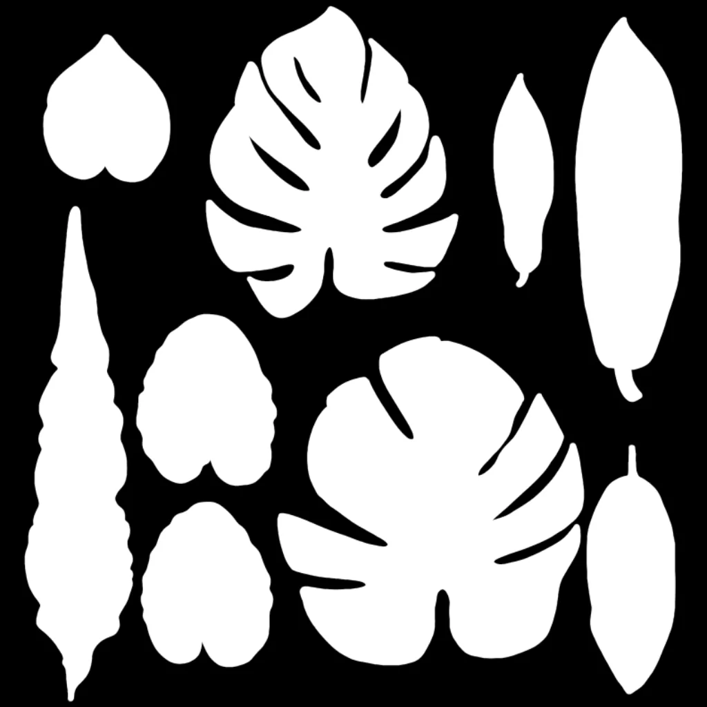
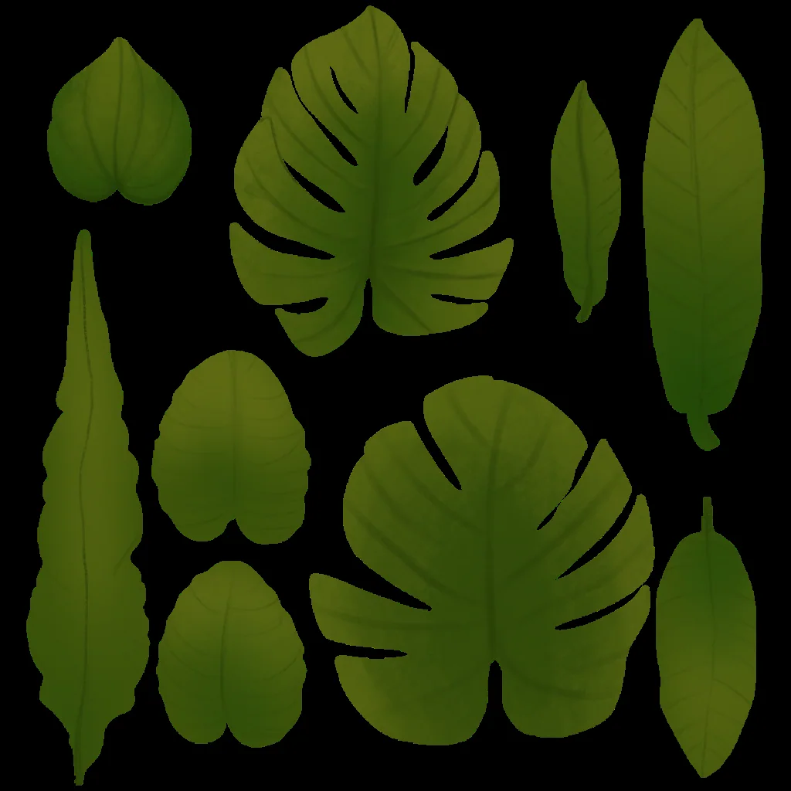

Independent Directed Research · Work in progress
Fantasy Environment — Game-Ready Forest In progress
A two-artist collaboration to build a game-ready, magical forest environment, from modeled assets and procedural materials to integration and VFX in Unreal Engine.
- Role
- Environment artist · Procedural materials · Vegetation · Water shader and VFX research
- Team
- 2 artists — Luisa and Michelle
- Planned duration
- Five-week production plan (work in progress)
- Workflow
- Maya · ZBrush · Substance Painter · Substance Designer · Unreal Engine
- My focus
- Trees, rocks, moss, foliage, bioluminescent plants, flowers, bushes, water shader, sparkle particles, wind
Project goal
Our goal is to create a game-ready environment that we can both use in our portfolios. We split up asset creation, using Maya and ZBrush to model and sculpt, Substance Painter and Substance Designer for texturing, and Unreal Engine to assemble the environment and add VFX. The visual direction takes inspiration from Barbie of Swan Lake concept art by Walter P. Martishius.


Division of responsibilities
My responsibilities — Luisa
Trees and rocks; moss and foliage materials; bioluminescent plants, flowers and bushes; a water shader; sparkle particles and wind effects.
Michelle’s responsibilities
Door, stone assets, tree columns / large tree, lantern, scene lighting, firefly trails, fog and outline shader.
My material work
I began with stylized bark, stone and moss materials, focusing on the surface treatment that would help establish a cohesive forest environment. These are material tests, not screenshots of a completed level.



Foliage workflow
To move from references into production-ready vegetation, I gathered a PureRef reference board and investigated tree creation using SpeedTree and Unreal Engine tools. The project log also records a completed first foliage texture and alpha sheet, with further flower and mushroom sheets planned.



Five-week production plan
- Week 1: High-poly trees and rocks; foliage silhouettes and material references.
- Week 2: Finish high-poly modeling, retopology, UVs and baking; begin moss and foliage materials.
- Week 3: Finish primary textures, moss blending, foliage, flowers and bioluminescent plants; start water shader.
- Week 4: Finish the water shader, implement sparkle particles and wind, refine foliage placement and Unreal materials.
- Week 5: Optimize assets and shaders, polish VFX and lighting, correct visual issues, and prepare final shots.
Progress and challenges
The initial project updates document completed moss, bark and stone material tests and a finished first foliage texture / alpha sheet. My water shader was still in the research and tutorial stage at the latest recorded progress update. Learning that shader took longer than I originally expected, so I continued researching implementation approaches and how height maps could add depth to moss and bark in Unreal. Tree workflows and additional vegetation sheets were also still being explored.
What I’m learning: How much planning a shared environment needs before assets are combined, how material development affects scene style, and how a new shader technique can change the production schedule. The project is a work in progress; the images above document studies and prototypes rather than a finished scene.
Project scope and progress are drawn from the agreed IDR proposal and weekly updates, beginning with “We want to use this IDR to make a game ready environment…”; earlier brainstorm material is excluded. Reference artwork is labeled separately from our original work.